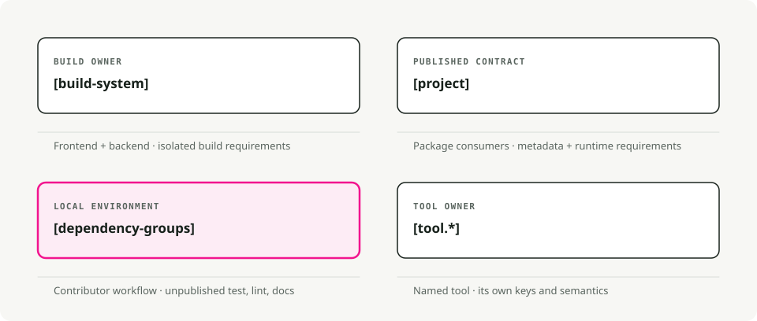
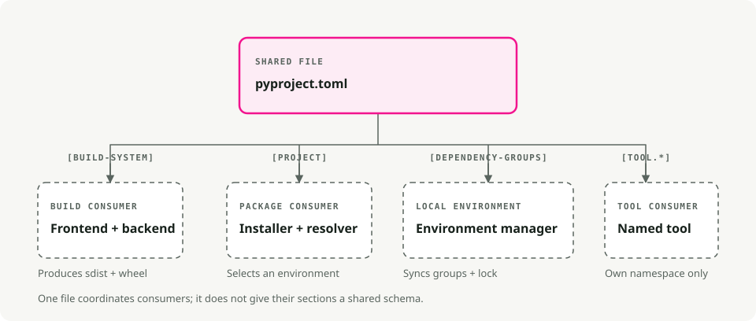
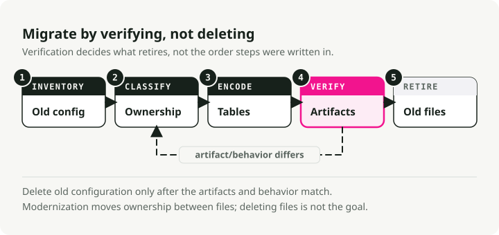

pyproject.toml Guide: Python Packaging, Dependencies, and Tool Configuration
Older Python projects often spread configuration across setup.py, setup.cfg, requirements files, MANIFEST.in, and separate files for development tools. pyproject.toml gives those concerns a common home, although it does not replace every project file or make every section part of one standard.
This guide walks through the file from build configuration to project metadata and tool settings. The easiest way to keep it understandable is to separate four owners: what builds the project, what the project publishes, what contributors need locally, and what individual tools configure.
TL;DR. Use
[build-system]for the backend that builds a distribution,[project]for published metadata and runtime requirements,[dependency-groups]for unpublished development environments, and[tool.*]only where that tool's documentation says to. A dependency declaration is not a lockfile.
One file, four owners

Three packaging standards established the core structure:
- PEP 518 defines build-system requirements.
- PEP 621 defines project metadata.
- PEP 735 defines unpublished dependency groups.
Tool authors can also claim a namespace below [tool]. That area is conventional, not universal: every tool defines its own keys and behavior.
Here is a small packaged library:
[build-system]
requires = ["hatchling>=1.26"]
build-backend = "hatchling.build"
[project]
name = "weather-client"
version = "0.1.0"
description = "A small weather API client"
readme = "README.md"
requires-python = ">=3.11"
dependencies = [
"httpx>=0.27",
]
[project.optional-dependencies]
cli = ["rich>=13"]
[project.scripts]
weather = "weather_client.cli:main"
[dependency-groups]
test = ["pytest>=8", "pytest-cov>=5"]
lint = ["ruff>=0.12"]
[tool.pytest.ini_options]
testpaths = ["tests"]
[tool.ruff]
line-length = 100
target-version = "py311"
Each dependency list answers a different question. That distinction is the center of the file.
[build-system]: how source becomes a distribution
A build frontend such as python -m build, pip, or uv invokes a build backend. The backend decides how the source tree becomes an sdist or wheel and which files enter those artifacts.
[build-system]
requires = ["hatchling>=1.26"]
build-backend = "hatchling.build"
requires contains dependencies needed to run the backend in its isolated build environment. It is not the runtime dependency list for your package.
Declare a build system when the project produces a distribution or needs its own code installed as a package. A non-package project can still use pyproject.toml; PEP 735 even permits a file containing only dependency groups. Environment managers differ in how they treat a project with no build system, so make that choice deliberately.
Choose the backend from build requirements:
- pure-Python layout and file-selection needs
- compiled extensions or external build systems
- dynamic version or generated-file requirements
- editable-install behavior
- backend maturity in the release pipeline
Copy the backend's current recommended table from its documentation. Do not add wheel to build requirements by habit; the backend declares what it needs.
[project]: metadata consumers receive
The [project] table describes the distribution: its name, version, Python compatibility, runtime dependencies, entry points, and other index metadata.
[project]
name = "weather-client"
version = "0.1.0"
requires-python = ">=3.11"
dependencies = ["httpx>=0.27"]
The dependency specifiers are constraints for a resolver, not a snapshot of one environment. They become part of wheel and sdist metadata, so downstream installers can combine them with requirements from other packages.
Extras are a public installation interface
[project.optional-dependencies] defines extras that consumers can request:
[project.optional-dependencies]
cli = ["rich>=13"]
postgres = ["psycopg[binary]>=3.2"]
A consumer can install weather-client[cli]. Because extra names and requirements are published, treat them as product capabilities. Do not use an extra named dev merely to hold every contributor tool.
Entry points connect installed commands to Python
[project.scripts]
weather = "weather_client.cli:main"
After the distribution is installed, the environment exposes weather, which imports and calls weather_client.cli:main. Test the command from a built wheel, not only from the repository root; the wheel is what users receive.
[dependency-groups]: local, unpublished environments
PEP 735 dependency groups describe development or non-package environments without publishing them as package metadata.
[dependency-groups]
test = ["pytest>=8", "pytest-cov>=5"]
lint = ["ruff>=0.12"]
dev = [
{ include-group = "test" },
{ include-group = "lint" },
]
This is the right boundary for tests, linters, documentation builders, and similar contributor tools. It is also useful for applications or notebooks that do not build a distribution.
Dependency groups are standardized data, but installer interfaces still vary. Check how the selected environment manager installs, locks, and resolves them. PEP 735 does not define a universal command-line interface.
[tool.*]: configuration owned by one tool
Tool tables do not share a schema:
[tool.pytest.ini_options]
addopts = "-ra"
testpaths = ["tests"]
[tool.ruff]
line-length = 100
Use a [tool.*] table only if the tool documents it. Some settings still belong in their own files because another ecosystem consumes them, the file needs a different format, or the configuration is clearer on its own. pyproject.toml is a coordination point, not a mandate to centralize everything.

Declarations, locks, and requirements files solve different problems
The most common source of confusion is treating every dependency artifact as a competing source of truth.
| Artifact | Primary purpose | Typical contents |
|---|---|---|
[project.dependencies] |
Published runtime contract | Direct requirements and compatible ranges |
[project.optional-dependencies] |
Published opt-in capabilities | Consumer-facing extras |
[dependency-groups] |
Unpublished local environments | Test, lint, docs, or application groups |
| Lockfile | Reproduce a resolved environment | Exact versions, sources, and resolution metadata |
requirements.txt |
pip-compatible installation input | Requirements plus pip-specific options, constraints, URLs, or hashes |
A library normally publishes compatible constraints and tests against a range. An application normally commits the environment manager's lockfile. Exact pins belong in the resolved deployment artifact, not blindly in a library's public metadata.
Keep a requirements file when an integration requires pip's format or features. If a uv-managed project needs one, export it from the lock rather than maintaining two independent dependency sets:
uv export --format requirements.txt --output-file requirements.txt
The export is derived compatibility output. The lock remains the resolved source for that workflow.
A migration that preserves behavior

Do not start by deleting setup.py or requirements.txt. First classify what each existing file does.
- Inventory build logic, metadata, runtime requirements, extras, developer environments, tool settings, package data, and entry points.
- Select a backend that can reproduce current file inclusion, compiled artifacts, and editable installs.
- Move static published metadata into
[project]; keep genuinely dynamic fields explicit. - Move contributor-only requirements into
[dependency-groups], not public extras. - Move tool settings only where the tool supports equivalent semantics.
- Build both an sdist and wheel, inspect their contents, and install the wheel in a clean environment.
- Run entry points, tests, import checks, and the actual deployment path.
- Delete old configuration only after the artifacts and behavior match.
MANIFEST.in may still be needed with some setuptools layouts, and a small setup.py can remain valid for programmatic build behavior. Modernization is a change in ownership, not a file-deletion contest.
A current uv workflow
uv distinguishes applications from libraries when creating a project:
# Non-library application template
uv init weather-app
# Packaged library with a src layout and build system
uv init --lib weather-client
uv init creates project files. The first project operation such as uv run, uv sync, or uv lock creates the lockfile and persistent .venv as needed.
cd weather-client
uv add httpx
uv add --group test pytest pytest-cov
uv run pytest
uv build
uv currently places local development requirements in standardized dependency groups. Its native uv_build backend is one option for pure-Python projects; compiled extensions need a suitable alternative such as maturin or scikit-build-core.
Conclusion
pyproject.toml is clear when every table has one audience. Build isolation belongs to [build-system]. Published behavior belongs to [project]. Contributor environments belong to [dependency-groups]. Tool switches belong to the tool that defines them.
Once those boundaries are stable, the file becomes easier to review—and migrations stop confusing package metadata with one machine's resolved environment.